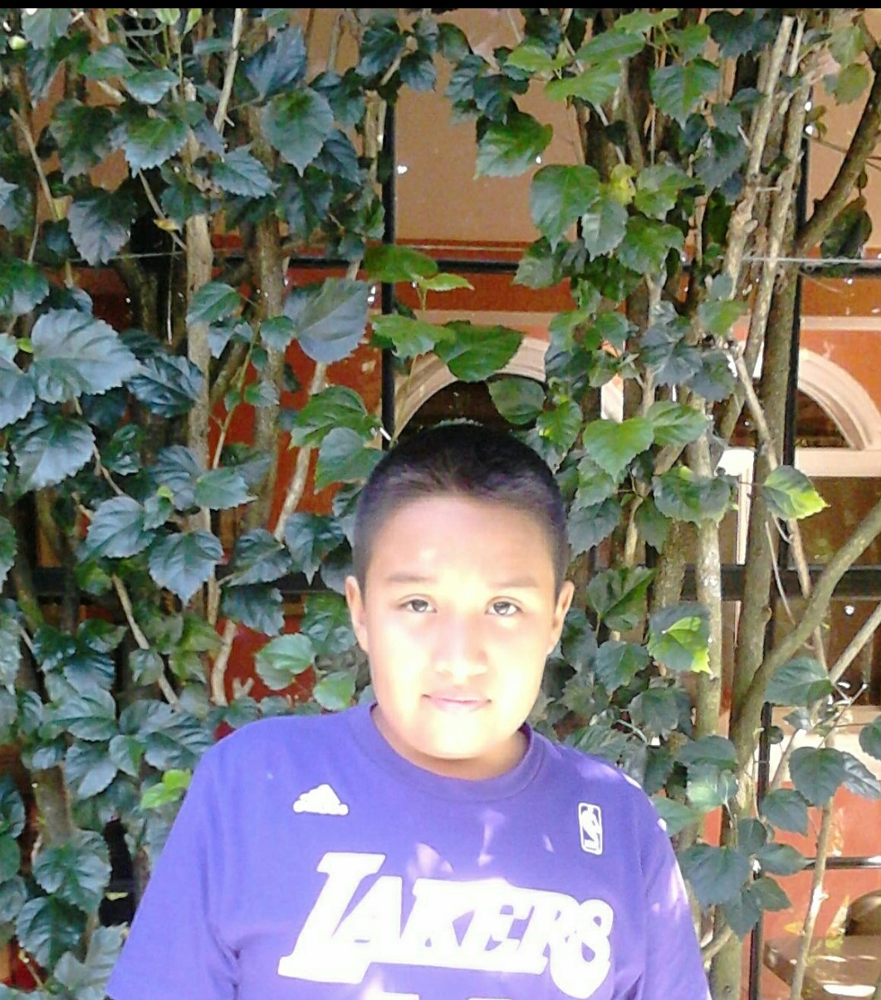

Pueeees la verdad me ha servido un poco para mentalizarme un poco y tener distintas perspectivas sobre la vida, llegando a experimentar fuertes emociones de felicidad durante un corto periodo de tiempo, pensando apartir de ahí la vida
empezaba a cobrar sentido. Para que? para que se acabaran de la nada :). Pero bueeeno la vida sigue y se supone que es para llegar a conseguir la mejor version de uno mismo y aprender a tomar desiciones. Un ejemplo podria ser el no abrirse
tanto con alguien que posiblemente te deje. Hay que aprender a seleccionar en quien confiar, por que si, esas personas existen pero hay otras que solo llegan disfrasadas.
En lo particular creo que si estoy destinado a estar solo o tal vez llegue alguien a mi vida y prometo esta vez examinar a esa persona y no dejarme llevar por palabras bonitas, pero por el momento si creo que seguire enfocandome en mi, primero a
enfocarme en mi condición física y ademas aprovechar esas malas vibras que aveces te llegan a la vida, utilizandolo como fuente de energía para seguir adelante y tener motivos por los cuales mejorar y no estar deprimido por cosas que no valen
sino que en verdad poner en marcha la frase de: "Los errores te hacen más fuerte", ese es el mayor consejo que le puedo dar a alguien el aprovechar esas cosas negativas para que sean el motivo de querer mejorar.
La verdad yo nunca es que anelahara un cambio para verme mejor sino que el ejercicio solo ha sido un pasatiempo, una actividad que te saca de tu dia a dia y hace que te distraigas mientras mejoras, para mi de lo mejorcito que hay.